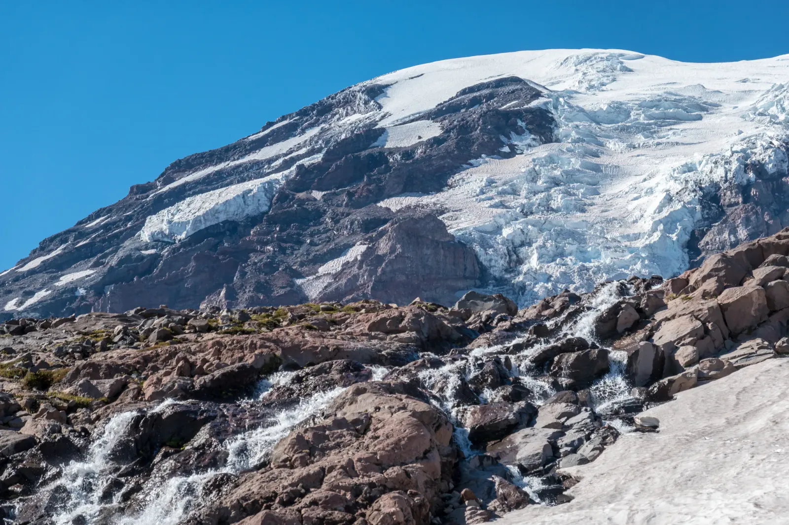

Above Paradise
The trail to Camp Muir starts in the wildflower meadows at Paradise, on Rainier's south side, and climbs until the meadows are a long way below. It follows the Skyline Trail past patches of lingering snow, then gives way to the Muir Snowfield, a wide white slope that climbs for what feels like forever. At the top sits Camp Muir, 10,080 feet above sea level and still more than four thousand feet below the summit. It's the high camp where many climbers begin their summit attempts.
Rainier spent the whole trip showing off its glaciers. It's the most heavily glaciated peak in the lower 48, and from the trail you can see why: cracked blue ice spilling down the flank and meltwater racing over red-brown volcanic rock, with one thin waterfall dropping off a cliff right below the edge of the ice. Past the last of the meadows, the world turned into snow and broken stone.

I pitched my tent on the flattest patch of rubble I could find, which is a generous way to describe it, and the view from the door was the kind you usually only get from an airplane window. It gets cold fast once the sun drops, so pack extra layers. By evening, a sea of clouds had filled every valley below, so thick it looked like you could walk out onto it. Only the green ridges and the jagged Tatoosh peaks poked through, like islands. Far on the horizon, three more volcanoes stood above the haze: broad Mount Adams, Mount St. Helens still missing the top it lost in 1980, and, if I squinted, a faint Mount Hood.
I watched the light turn gold, then pink, and when it was gone a faint Milky Way stretched across the sky, with distant cities glowing orange under the clouds. Clouds are supposed to be a ceiling. On an earlier trip, they hid this whole mountain from me. Now they were the floor. When it was time to leave, I walked back down through lupine and paintbrush in full bloom.